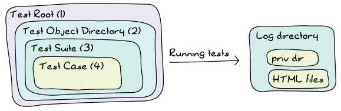
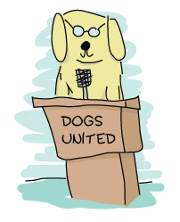
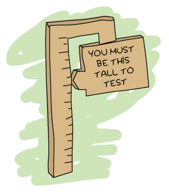

Common Test for Uncommon Tests
A few chapters ago, we've seen how to use EUnit to do unit and module testing, and even some concurrent testing. At that point, EUnit started to show its limits. Complex setups and longer tests that needed to interact between each other became problematic. Plus, there was nothing in there to handle our new knowledge of distributed Erlang and all of its power. Fortunately, there's another test framework that exists, this one more appropriate to the heavy lifting we now want to do.

What is Common Test
As programmers, we enjoy treating our programs as black boxes. Many of us would define the core principle behind a good abstraction as being able to replace whatever it is we've written by an anonymous black box. You put something in the box, you get something out of it. You don't care how it works on the inside, as long as you get what you want.
In the testing world, this has an important connection to how we like to test systems. When we were working with EUnit, we've seen how to treat a module as a black box: you only test the exported functions and none of the ones inside, which are not exported. I've also given examples on testing items as a white box, like in the case of the process quest player module's tests, where we looked at the innards of the module to make its testing simpler. This was necessary because the interaction of all the moving parts inside the box made testing it from the outside very complex.
That was for modules and functions. What if we zoom out a bit? Let's fiddle with our scope in order to see the broader picture. What if what we want to test is a library? What if it's an application? Even broader, what if it's a complete system? Then what we need is a tool that's more adept at doing something called system testing.
EUnit is a pretty good tool for white box testing at a module level. It's a decent tool to test libraries and OTP applications. It's possible to do system testing and black box testing, but it's not optimal.
Common Test, however, is pretty damn good at system testing. It's decent for testing libraries and OTP applications, and it's possible, but not optimal, to use it to test individual modules. So the smaller what you test is, the more appropriate (and flexible, and fun) EUnit will be. The larger your test is, the more appropriate (and flexible, and, uh, somewhat fun) Common Test will be.
You might have heard of Common Test before and tried to understand it from the documentation given with Erlang/OTP. Then you likely gave up real quick. Don't worry. The problem is that Common Test is very powerful and has an accordingly long user guide, and that at the time of this writing, most of its documentation appears to be coming from internal documentation from the days when it was used only within the walls of Ericsson. In fact, its documentation is more of a reference manual for people who already understand it than a tutorial.
In order to properly learn Common Test, we'll have to start from the simplest parts of it and slowly grow our way to system tests.
Common Test Cases
Before even getting started, I have to give you a little overview of how Common Test organises its things. First of all, because Common Test is appropriate for system testing, it will assume two things:
- We will need data to instantiate our stuff
- We will need a place to store all that side-effecty stuff we do, because we're messy people.
Because of this, Common Test will regularly be organized as follows:

The test case is the simplest one. It's a bit of code that either fails or succeeds. If the case crashes, the test is unsuccessful (how surprising). Otherwise, the test case is thought to be successful. In Common Test, test cases are single functions. All these functions live in a test suite (3), a module that takes care of regrouping related test cases together. Each test suite will then live in a directory, the Test Object Directory (2). The test root (1) is a directory that contains many test object directories, but due to the nature of OTP applications often being developed individually, many Erlang programmers tend to omit that layer.
In any case, now that we understand that organisation, we can go back to our two assumptions (we need to instantiate stuff, and then mess stuff up). Each test suite is a module that ends with _SUITE. If I were to test the magic 8-ball application from last chapter, I might thus call my suite m8ball_SUITE. Related to that one is a directory called the data directory. Each suite is allowed to have one such directory, usually named Module_SUITE_data/. In the case of the magic 8-ball app, it would have been m8ball_SUITE_data/. That directory contains anything you want.
What about the side-effects? Well because we might run tests many times, Common Test develops its structure a bit more:
Whenever you run the tests, Common Test will find some place to log stuff (usually the current directory, but we'll see how to configure it later). When doing so, it will create a unique directory where you can store your data. That directory (Priv Dir above), along with the data directory, will be passed as part of some initial state to each of your tests. You're then free to write whatever you want in that private directory, and then inspect it later, without running the risk of overwriting something important or the results of former test runs.
Enough with this architectural material; we're ready to write our first simple test suite. Create a directory named ct/ (or whatever you'd like, this is hopefully a free country, after all). That directory will be our test root. Inside of it, we can then make a directory named demo/ for the simpler tests we'll use as examples. This will be our test object directory.
Inside the test object directory, we'll begin with a module named basic_SUITE.erl, to see the most basic stuff possible. You can omit creating the basic_SUITE_data/ directory — we won't need it for this run. Common Test won't complain.
Here's what the module looks like:
-module(basic_SUITE).
-include_lib("common_test/include/ct.hrl").
-export([all/0]).
-export([test1/1, test2/1]).
all() -> [test1,test2].
test1(_Config) ->
1 = 1.
test2(_Config) ->
A = 0,
1/A.
Let's study it step by step. First of all, we've got to include the file "common_test/include/ct.hrl". That file gives a few useful macros, and even though basic_SUITE doesn't use them, it's usually a good habit of including that file.
Then we have the function all/0. That function returns a list of test cases. It's basically what tells Common Test "hey, I want to run these test cases!". EUnit would do it based on the name (*_test() or *_test_()); Common Test does it with an explicit function call.

What about these _Config variables? They're unused for now, but for your own personal knowledge, they contain the initial state your test cases will require. That state is literally a proplist, and it initially contains two values, data_dir and priv_dir, the two directories we have for our static data and the one where we can mess around.
We can run the tests either from the command line or from an Erlang shell. If you use the command line, you can call $ ct_run -suite Name_SUITE. In Erlang/OTP versions before R15 (released around December 2011), the default command was run_test instead of ct_run (although some systems had both already). The name was changed with the objective of minimizing the risk of name clashes with other applications by moving to a slightly less generic name. Running it, we find:
ct_run -suite basic_SUITE ... Common Test: Running make in test directories... Recompile: basic_SUITE ... Testing ct.demo.basic_SUITE: Starting test, 2 test cases - - - - - - - - - - - - - - - - - - - - - - - - - - basic_SUITE:test2 failed on line 13 Reason: badarith - - - - - - - - - - - - - - - - - - - - - - - - - - Testing ct.demo.basic_SUITE: *** FAILED *** test case 2 of 2 Testing ct.demo.basic_SUITE: TEST COMPLETE, 1 ok, 1 failed of 2 test cases Updating /Users/ferd/code/self/learn-you-some-erlang/ct/demo/index.html... done Updating /Users/ferd/code/self/learn-you-some-erlang/ct/demo/all_runs.html... done
And we find that one of our two test cases fails. We also see that we apparently inherited a bunch of HTML files. Before looking to know what this is about, let's see how to run the tests from the Erlang shell:
$ erl
...
1> ct:run_test([{suite, basic_SUITE}]).
...
Testing ct.demo.basic_SUITE: Starting test, 2 test cases
- - - - - - - - - - - - - - - - - - - - - - - - - -
basic_SUITE:test2 failed on line 13
Reason: badarith
- - - - - - - - - - - - - - - - - - - - - - - - - -
...
Updating /Users/ferd/code/self/learn-you-some-erlang/ct/demo/index.html... done
Updating /Users/ferd/code/self/learn-you-some-erlang/ct/demo/all_runs.html... done
ok
I've removed a bit of the output above, but it gives exactly the same result as the command line version. Let's see what's going on with these HTML files:
$ ls all_runs.html basic_SUITE.beam basic_SUITE.erl ct_default.css ct_run.NodeName.YYYY-MM-DD_20.01.25/ ct_run.NodeName.YYYY-MM-DD_20.05.17/ index.html variables-NodeName
Oh what the hell did Common Test do to my beautiful directory? It is a shameful thing to look at. We've got two directories there. Feel free to explore them if you feel adventurous, but all the cowards like me will prefer to instead look at either the all_runs.html or the index.html files. The former will link to indexes of all iterations of the tests you ran while the latter will link to the newest runs only. Pick one, and then click around in a browser (or press around if you don't believe in mice as an input device) until you find the test suite with its two tests:

You see that test2 failed. if you click on the underlined line number, you'll see a raw copy of the module. If you instead click on the test2 link, you'll see a detailed log of what happened:
=== source code for basic_SUITE:test2/1
=== Test case started with:
basic_SUITE:test2(ConfigOpts)
=== Current directory is "Somewhere on my computer"
=== Started at 2012-01-20 20:05:17
[Test Related Output]
=== Ended at 2012-01-20 20:05:17
=== location [{basic_SUITE,test2,13},
{test_server,ts_tc,1635},
{test_server,run_test_case_eval1,1182},
{test_server,run_test_case_eval,1123}]
=== reason = bad argument in an arithmetic expression
in function basic_SUITE:test2/1 (basic_SUITE.erl, line 13)
in call from test_server:ts_tc/3 (test_server.erl, line 1635)
in call from test_server:run_test_case_eval1/6 (test_server.erl, line 1182)
in call from test_server:run_test_case_eval/9 (test_server.erl, line 1123)
The log lets you know precisely what failed, and it is much more detailed than whatever we had in the Erlang shell. This is important to remember because if you're a shell user, you'll find Common Test extremely painful to use. If you're a person more prone to use GUIs anyway, then it'll be pretty fun for you.
But enough wandering around pretty HTML files, let's see how to test with some more state.
Note: if you ever feel like traveling back in time without the help of a time machine, download a version of Erlang prior to R15B and use Common Test with it. You'll be astonished to see that your browser and the logs' style brought you back into the late 1990s.
Testing With State
If you have read the EUnit chapter (and haven't skipped around), you'll remember that EUnit had these things called fixtures, where we'd give a test case some special instantiation (setup) and teardown code to be called before and after the case, respectively.
Common Test follows that concept. Instead of having EUnit-style fixtures, it instead relies on two functions. The first is the setup function, called init_per_testcase/2 and the second one is the teardown function, called end_per_testcase/2. To see how they're used, create a new test suite called state_SUITE (still under the demo/ directory), add the following code:
-module(state_SUITE).
-include_lib("common_test/include/ct.hrl").
-export([all/0, init_per_testcase/2, end_per_testcase/2]).
-export([ets_tests/1]).
all() -> [ets_tests].
init_per_testcase(ets_tests, Config) ->
TabId = ets:new(account, [ordered_set, public]),
ets:insert(TabId, {andy, 2131}),
ets:insert(TabId, {david, 12}),
ets:insert(TabId, {steve, 12943752}),
[{table,TabId} | Config].
end_per_testcase(ets_tests, Config) ->
ets:delete(?config(table, Config)).
ets_tests(Config) ->
TabId = ?config(table, Config),
[{david, 12}] = ets:lookup(TabId, david),
steve = ets:last(TabId),
true = ets:insert(TabId, {zachary, 99}),
zachary = ets:last(TabId).
This is a little normal ETS test checking a few ordered_set concepts. What's interesting about it is the two new functions, init_per_testcase/2 and end_per_testcase/2. Both functions need to be exported in order to be called. If they're exported, the functions are going to be called for all test cases in a module. You can separate them based on the arguments. The first one is the name of the test case (as an atom), and the second one is the Config proplist that you can modify.
Note: to read from Config, rather than using proplists:get_value/2, the Common test include file has a ?config(Key, List) macro that returns the value matching the given key. The macro is in fact equivalent to proplists:get_value/2 and is documented as such, so you know you can deal with Config as a proplist without worrying about it ever breaking.
As an example, if I had tests a, b, and c and only wanted a setup and teardown function for the first two tests, my init function might look like this:
init_per_testcase(a, Config) ->
[{some_key, 124} | Config];
init_per_testcase(b, Config) ->
[{other_key, duck} | Config];
init_per_testcase(_, Config) ->
%% ignore for all other cases
Config.
And similarly for the end_per_testcase/2 function.
Looking back at state_SUITE, you can see the test case, but what's interesting to note is how I instantiate the ETS table. I specify no heir, and yet, the tests run without a problem after the init function is done.
You'll remember that we've seen, in the ETS chapter, that ETS tables are usually owned by the process that started them. In this case, we leave the table as it is. If you run the tests, you'll see the suite succeeds.
What we can infer from this is that the init_per_testcase and end_per_testcase functions run in the same process as the test case itself. You can thus safely do things like set links, start tables and whatnot without worrying about different processes breaking your things. What about errors in the test case? Fortunately, crashing in your test case won't stop Common Test from cleaning up and calling the end_per_testcase function, with the exception of kill exit signals.
We're now pretty much equal to EUnit with Common Test, at least in terms of flexibility, if not more. Although we haven't got all the nice assertion macros, we have fancier reports, similar fixtures, and that private directory where we can write stuff from scratch. What more do we want?
Note: if you end up feeling like outputting stuff to help you debug things or just show progress in your tests, you'll quickly find out that io:format/1-2 prints only in the HTML logs but not the Erlang shell. If you want to do both (with free time stamps included), use the function ct:pal/1-2. It works like io:format/1-2, but prints to both the shell and logs.
Test Groups
Right now, our test structure within a suite might look at best like this:
[test]->[end] in a column" />What if we have many test cases with similar needs in term of some init functions, but some different parts in them? Well, the easy way to do it is to copy/paste and modify, but this will be a real pain to maintain.
Moreover, what if what we want to do with many tests is to run them in parallel or in random order instead of one after the other? Then there's no easy way to do that based on what we've seen so far. This was pretty much the same kind of problem that could limit our use of EUnit, too.
To solve these issues, we've got something called test groups. Common Test test groups allow us to regroup some tests hierarchically. Even more, they can regroup some groups within other groups:
[test]->[end] from the previous illustration is now integrated within a [group init]->[previous picture]->[group end]" />To make this work, we need to be able to declare the groups. The way to do it is to add a group function to declare all of them:
groups() -> ListOfGroups.
Well, there's a groups() function. Here's what ListOfGroups should be:
[{GroupName, GroupProperties, GroupMembers}]
And more in detail, here's what this could look like:
[{test_case_street_gang,
[],
[simple_case, more_complex_case]}].
That's a tiny test case street gang. Here's a more complex one:
[{test_case_street_gang,
[shuffle, sequence],
[simple_case, more_complex_case,
emotionally_complex_case,
{group, name_of_another_test_group}]}].
That one specifies two properties, shuffle and sequence. We'll see what they mean soon. The example also shows a group including another group. This assumes that the group function might be a bit like this:
groups() ->
[{test_case_street_gang,
[shuffle, sequence],
[simple_case, more_complex_case, emotionally_complex_case,
{group, name_of_another_test_group}]},
{name_of_another_test_group,
[],
[case1, case2, case3]}].
What you can do is also define the group inline within another group:
[{test_case_street_gang,
[shuffle, sequence],
[simple_case, more_complex_case,
emotionally_complex_case,
{name_of_another_test_group,
[],
[case1, case2, case3]}
]}].
That's getting a bit complex, right? Read them carefully, it should be simpler with time. In any case, nested groups are not a mandatory thing and you can avoid them if you find them confusing.
But wait, how do you use such a group? Well, by putting them in the all/0 function:
all() -> [some_case, {group, test_case_street_gang}, other_case].
And that way, Common Test will be able to know whether it needs to run a test case or not.
I've quickly skipped over the group properties. We've seen shuffle, sequence and an empty list. Here's what they stand for:
- empty list / no option
- The test cases in the group are run one after the other. If a test fails, the others after it in the list are run.
- shuffle
- Runs the test in a random order. The random seed (the initialization value) used for the sequence will be printed in the HTML logs, of the form
{A,B,C}. If a particular sequence of tests fails and you want to reproduce it, use that seed in the HTML logs and change theshuffleoption to instead be{shuffle, {A,B,C}}. That way you can reproduce random runs in their precise order if you ever need to. - parallel
- The tests are run in different processes. Be careful because if you forget to export the
init_per_groupandend_per_groupfunctions, Common Test will silently ignore this option. - sequence
- Doesn't necessarily mean that the tests are run in order, but rather that if a test fails in the group's list, then all the other subsequent tests are skipped. This option can be combined with
shuffleif you want any random test failing to stop the ones after. - {repeat, Times}
- Repeats the group Times times. You could thus run all test cases in the group in parallel 9 times in a row by using the group properties
[parallel, {repeat, 9}]. Times can also have the valueforever, although 'forever' is a bit of a lie as it can't defeat concepts such as hardware failure or heat death of the Universe (ahem). - {repeat_until_any_fail, N}
- Runs all the tests until one of them fails or they have been run N times. N can also be
forever. - {repeat_until_all_fail, N}
- Same as above, but the tests may run until all cases fail.
- {repeat_until_any_succeed, N}
- Same as before, except the tests may run until at least one case succeeds.
- {repeat_until_all_succeed, N}
- I think you can guess this one by yourself now, but just in case, it's the same as before except that the test cases may run until they all succeed.
Well, that's something. Honestly, that's quite a bit of content for test groups and I feel an example would be appropriate here.
The Meeting Room
To first use test groups, we'll create a meeting room booking module.
-module(meeting).
-export([rent_projector/1, use_chairs/1, book_room/1,
get_all_bookings/0, start/0, stop/0]).
-record(bookings, {projector, room, chairs}).
start() ->
Pid = spawn(fun() -> loop(#bookings{}) end),
register(?MODULE, Pid).
stop() ->
?MODULE ! stop.
rent_projector(Group) ->
?MODULE ! {projector, Group}.
book_room(Group) ->
?MODULE ! {room, Group}.
use_chairs(Group) ->
?MODULE ! {chairs, Group}.
These basic functions will call a central registry process. They'll do things like allowing us to book the room, rent a projector, and put dibs on chairs. For the sake of the exercise, we're in a large organization with one hell of a corporate structure. Because of this, there are three different people responsible for the projector, the room and the chairs, but one central registry. As such, you can't book all items at once, but must do it by sending three different messages.
To know who booked what, we can send a message to the registry in order to get all the values:
get_all_bookings() ->
Ref = make_ref(),
?MODULE ! {self(), Ref, get_bookings},
receive
{Ref, Reply} ->
Reply
end.
The registry itself looks like this:
loop(B = #bookings{}) ->
receive
stop -> ok;
{From, Ref, get_bookings} ->
From ! {Ref, [{room, B#bookings.room},
{chairs, B#bookings.chairs},
{projector, B#bookings.projector}]},
loop(B);
{room, Group} ->
loop(B#bookings{room=Group});
{chairs, Group} ->
loop(B#bookings{chairs=Group});
{projector, Group} ->
loop(B#bookings{projector=Group})
end.
And that's it. To book everything for a successful meeting, we'd need to successively call:
1> c(meeting).
{ok,meeting}
2> meeting:start().
true
3> meeting:book_room(erlang_group).
{room,erlang_group}
4> meeting:rent_projector(erlang_group).
{projector,erlang_group}
5> meeting:use_chairs(erlang_group).
{chairs,erlang_group}
6> meeting:get_all_bookings().
[{room,erlang_group},
{chairs,erlang_group},
{projector,erlang_group}]
Great. This does seem wrong, though. You've possibly got this lingering feeling that things could go wrong. In many cases, if we make the three calls fast enough, we should obtain everything we want from the room without a problem. If two people do it at once and there are short pauses between the calls, it seems possible that two (or more) groups might try to rent the same equipment at once.
Oh no! Suddenly, the programmers might end up having the projector, while the board of directors has the room, and the human resources department managed to rent all chairs at once. All resources are tied up, but nobody can do anything useful!
We won't worry about fixing that problem. Instead we'll work on trying to demonstrate that it's present with a Common Test suite.
The suite, named meeting_SUITE.erl, will be based on the simple idea of trying to provoke a race condition that will mess up with the registration. We'll thus have three test cases, each representing a group. Carla will represent women, Mark will represent men, and a dog will represent a group of animals that somehow decided it wanted to hold a meeting with human-made tools:
-module(meeting_SUITE).
-include_lib("common_test/include/ct.hrl").
...
carla(_Config) ->
meeting:book_room(women),
timer:sleep(10),
meeting:rent_projector(women),
timer:sleep(10),
meeting:use_chairs(women).
mark(_Config) ->
meeting:rent_projector(men),
timer:sleep(10),
meeting:use_chairs(men),
timer:sleep(10),
meeting:book_room(men).
dog(_Config) ->
meeting:rent_projector(animals),
timer:sleep(10),
meeting:use_chairs(animals),
timer:sleep(10),
meeting:book_room(animals).
We don't care whether these tests actually test something or not. They are just there to use the meeting module (which we'll see how to put in place for the tests soon) and try to generate wrong reservations.
To find out if we had a race condition or not between all of these tests, we'll make use of the meeting:get_all_bookings() function in a fourth and final test:
all_same_owner(_Config) ->
[{_, Owner}, {_, Owner}, {_, Owner}] = meeting:get_all_bookings().

This one does a pattern matching on the owners of all different objects that can be booked, trying to see whether they are actually booked by the same owner. This is a desirable thing if we are looking for efficient meetings.
How do we move from having four test cases in a file to something that works? We'll need to make clever use of test groups.
First of all, because we need a race condition, we know we'll need to have a bunch of tests running in parallel. Secondly, given we have a requirement to see the problem from these race conditions, we'll need to either run all_same_owner many times during the whole debacle, or only after it to look with despair at the aftermath.
I chose the latter. This would give us this:
all() -> [{group, clients}, all_same_owner].
groups() -> [{clients,
[parallel, {repeat, 10}],
[carla, mark, dog]}].
This creates a clients group of tests, with the individual tests being carla, mark, and dog. They're going to run in parallel, 10 times each.
You see that I include the group in the all/0 function, and then put all_same_owner. That's because by default, Common Test will run the tests and groups in all/0 in the order they were declared.
But wait. We forgot to start and stop the meeting process itself. To do it, we'll need to have a way to keep a process alive for all tests, regardless of whether they're in the 'clients' group or not. The solution to this problem is to nest things one level deeper, in another group:
all() -> [{group, session}].
groups() -> [{session,
[],
[{group, clients}, all_same_owner]},
{clients,
[parallel, {repeat, 10}],
[carla, mark, dog]}].
init_per_group(session, Config) ->
meeting:start(),
Config;
init_per_group(_, Config) ->
Config.
end_per_group(session, _Config) ->
meeting:stop();
end_per_group(_, _Config) ->
ok.
We use the init_per_group and end_per_group functions to specify that the session group (which now runs {group, clients} and all_same_owner) will work with an active meeting. Don't forget to export the two setup and teardown functions, otherwise nothing will run in parallel.
Alright, let's run the tests and see what we get:
1> ct_run:run_test([{suite, meeting_SUITE}]).
...
Common Test: Running make in test directories...
...
TEST INFO: 1 test(s), 1 suite(s)
Testing ct.meeting.meeting_SUITE: Starting test (with repeated test cases)
- - - - - - - - - - - - - - - - - - - - - - - - - -
meeting_SUITE:all_same_owner failed on line 50
Reason: {badmatch,[{room,men},{chairs,women},{projector,women}]}
- - - - - - - - - - - - - - - - - - - - - - - - - -
Testing ct.meeting.meeting_SUITE: *** FAILED *** test case 31
Testing ct.meeting.meeting_SUITE: TEST COMPLETE, 30 ok, 1 failed of 31 test cases
...
ok
Interesting. The problem is a badmatch with three tuples with different items owned by different people. Moreover, the output tells us it's the all_same_owner test that failed. I think that's a pretty good sign that all_same_owner crashed as planned.
If you go look at the HTML log, you'll be able to see all the runs with the exact test that failed, and for what reason. Click on the test name and you'll get the right test run.
Note: one last (and very important) thing to know about before moving on from test groups is that while the init functions of test cases ran in the same process as the test case, the init functions of groups run in distinct processes from the tests. This means that whenever you initialize actors that get linked to the process that spawned them, you have to make sure to first unlink them. In the case of ETS tables, you have to define a heir to make sure it doesn't disappear. And so on for all other concepts that get attached to a process (sockets, file descriptors, etc.).
Test Suites
What can we add to our test suites that is better than nesting of groups and manipulations of how one runs things in terms of hierarchy? Not much, but we'll add another level anyway with the test suite itself:
[group] -> [suite end]" />We have two additional functions, init_per_suite(Config) and end_per_suite(Config). These, like all the other init and end functions, aim to give more control over initialization of data and processes.
The init_per_suite/1 and end_per_suite/1 functions will run only once, respectively before and after all of the groups or test cases. They'll be mostly useful when dealing with general state and dependencies that will be required for all tests. This can include manually starting applications you depend on, for example.
Test Specifications
There's a thing you might have found pretty annoying if you looked at your test directory after running tests. There's a ton of files scattered around the directory for your logs. CSS files, HTML logs, directories, test run histories, etc. It would be pretty neat to have a nice way to store these files in a single directory.
Another thing is that so far we've run tests from a test suite. We've not really seen a good way to do it with many test suites at once, or even ways to only run one or two cases, or groups from a suite (or from many suites).
Of course, if I'm saying this, it's because I've got a solution for these issues. There are ways to do it both from the command line and from the Erlang shell, and you can find them in the documentation for ct_run. However, instead of going into ways to manually specify everything for each time you run the tests, we'll see something called test specifications.
Test specifications are special files that let you detail everything about how you want to have the tests run, and they work with the Erlang shell and the command line. The test specification can be put in a file with any extension you want (although I personally fancy .spec files). The spec files will contain Erlang tuples, much like a consult file. Here's a few of the items it can have:
{include, IncludeDirectories}- When Common Test automatically compiles suites, this option lets you specify where it should look for include files in order to make sure they're there. The IncludeDirectories value has to be a string (list) or a list of strings (list of lists).
{logdir, LoggingDirectory}- When logging, all logs should be moved to the LoggingDirectory, a string. Note that the directory must exist before the tests are run, otherwise Common Test will complain.
{suites, Directory, Suites}- Finds the given suites in Directory. Suites can be an atom (
some_SUITE), a list of atoms, or the atomallto run all the suites in a directory. {skip_suites, Directory, Suites, Comment}- This subtracts a list of suites from those previously declared and skips them. The Comment argument is a string explaining why you decided to skip them. This comment will be put in the final HTML logs. The tables will show a yellow 'SKIPPED: Reason' where Reason is whatever Comment contained.
{groups, Directory, Suite, Groups}- This is an option to pick only a few groups from a given suite. The Groups variable can be a single atom (the group name) or
allfor all groups. The value can also be more complex, letting you override the group definitions insidegroups()within the test case by picking a value like{GroupName, [parallel]}, which will override GroupName's options forparallel, without needing to recompile tests. {groups, Directory, Suite, Groups, {cases,Cases}}- Similar to the one above, but it lets you specify some test cases to include in the tests by substituting Cases by a single case name (an atom), a list of names, or the atom
all. {skip_groups, Directory, Suite, Groups, Comment}- This command was only added in R15B and documented in R15B01. It allows one to skip test groups, much like the
skip_suitesfor suites. There is no explanation as to why it wasn't there before then. {skip_groups, Directory, Suite, Groups, {cases,Cases}, Comment}- Similar to the one above, but with specific test cases to skip on top of it. Also only available since R15B.
{cases, Directory, Suite, Cases}- Runs specific test cases from a given suite. Cases can be an atom, a list of atoms, or
all. {skip_cases, Directory, Suite, Cases, Comment}- This is similar to
skip_suites, except we choose specific test cases to avoid with this one. {alias, Alias, Directory}- Because it gets very annoying to write all these directory names (especially if they're full names), Common Test lets you substitute them with aliases (atoms). This is pretty useful in order to be concise.
Before showing a simple example, you should add a logs/ directory above the demo/ one (ct/ in my files). Unsurprisingly, that's where our Common Test logs will be moved to. Here's what a possible test specification could look like for all our tests so far, under the imaginative name of spec.spec:
{alias, demo, "./demo/"}.
{alias, meeting, "./meeting/"}.
{logdir, "./logs/"}.
{suites, meeting, all}.
{suites, demo, all}.
{skip_cases, demo, basic_SUITE, test2, "This test fails on purpose"}.
This spec file declares two aliases, demo and meeting, which point to the two test directories we have. We put the logs inside ct/logs/, our newest directory. Then we ask to run all suites in the meeting directory, which, coincidentally is the meeting_SUITE suite. Next on the list are the two suites inside the demo directory. Moreover, we ask to skip test2 from the basic_SUITE suite, given it contains a division by zero that we know will fail.
To run the tests, you can either use $ ct_run -spec spec.spec (or run_test for versions of Erlang before R15), or you can use the function ct:run_test([{spec, "spec.spec"}]). from the Erlang shell:
Common Test: Running make in test directories...
...
TEST INFO: 2 test(s), 3 suite(s)
Testing ct.meeting: Starting test (with repeated test cases)
- - - - - - - - - - - - - - - - - - - - - - - - - -
meeting_SUITE:all_same_owner failed on line 51
Reason: {badmatch,[{room,men},{chairs,women},{projector,women}]}
- - - - - - - - - - - - - - - - - - - - - - - - - -
Testing ct.meeting: *** FAILED *** test case 31
Testing ct.meeting: TEST COMPLETE, 30 ok, 1 failed of 31 test cases
Testing ct.demo: Starting test, 3 test cases
Testing ct.demo: TEST COMPLETE, 2 ok, 0 failed, 1 skipped of 3 test cases
Updating /Users/ferd/code/self/learn-you-some-erlang/ct/logs/index.html... done
Updating /Users/ferd/code/self/learn-you-some-erlang/ct/logs/all_runs.html... done
If you take the time to look at the logs, you'll see two directories for the different test runs. One of them will have a failure; that's the meeting that fails as expected. The other one will have one success, and one skipped case, of the form 1 (1/0). Generally, the format is TotalSkipped (IntentionallySkipped/SkippedDueToError). In this case the skip happened from the spec file, so it goes on the left. If it happened because one of the many init functions failed, then it'd be on the right.
Common Test is starting to look like a pretty decent testing framework, but it'd be pretty nice to be able to use our distributed programming knowledge and apply it.
Large Scale Testing
Common Test does support having distributed tests. Before going hog wild and writing a bunch of code, let's see what's offered. Well, there isn't that much. The gist of it is that Common Test lets you start tests on many different nodes, but also has ways to dynamically start these nodes and have them watch each other.
As such, the distributed features of Common Test are really useful when you have large test suites that should be run in parallel on many nodes. This is often worth it to save time or because the code will run in production environments that are on different computers — automated tests that reflect this are desired.
When tests go distributed, Common Test requires the presence of a central node (the CT master) in charge of all the other ones. Everything's going to be directed from there, from starting nodes, ordering tests to be run, gathering logs, etc.
The first step to get things going that way is to expand our test specifications so they become distributed. We're going to add a few new tuples:
{node, NodeAlias, NodeName}- Much like
{alias, AliasAtom, Directory}for test suites, groups, and cases, except it's used for node names. Both NodeAlias and NodeName need to be atoms. This tuple is especially useful because NodeName needs to be a long node name, and in some cases this can be quite long. {init, NodeAlias, Options}- This is a more complex one. This is the option that lets you start nodes. NodeAlias can be a single node alias, or a list of many of them. The Options are those available to the
ct_slavemodule:
Here are a few of the options available:
{username, UserName}and{password, Password}- Using the host part of the node given by NodeAlias, Common Test will try to connect to the given host over SSH (on port 22) using the user name and password and run from there.
{startup_functions, [{M,F,A}]}- This option defines a list of functions to be called as soon as the other node has booted.
{erl_flags, String}- This sets standard flags that we'd want to pass to the
erlapplication when we start it. For example, if we wanted to start a node witherl -env ERL_LIBS ../ -config conf_file, the option would be{erl_flags, "-env ERL_LIBS ../ -config config_file"}. {monitor_master, true | false}- If the CT master stops running and the option is set to
true, then the slave node will also be taken down. I do recommend using this option if you're spawning the remote nodes; otherwise they'll keep running in the background if the master dies. Moreover, if you run tests again, Common Test will be able to connect to these nodes, and there will be some state attached to them. {boot_timeout, Seconds},{init_timeout, Seconds},{startup_timeout, Seconds}- These three options let you wait for different parts of the starting of a remote node. The boot timeout is about how long it takes before the node becomes pingable, with a default value of 3 seconds. The init timeout is an internal timer where the new remote node calls back the CT master to tell it it's up. By default, it lasts one second. Finally, the startup timeout tells Common Test how long to wait for the functions we defined earlier as part of the
startup_functionstuple. {kill_if_fail, true | false}- This option will react to one of the three timeouts above. If any of them are triggered, Common Test will abort the connection, skip tests, etc. but not necessarily kill the node, unless the option is set to
true. Fortunately, that's the default value.
Note: all these options are provided by the ct_slave module. It is possible to define your own module to start slave nodes, as long as it respects the right interface.
That makes for quite a lot of options for remote nodes, but that's partially what gives Common Test its distributed power; you're able to boot nodes with pretty much as much control as what you'd get doing it by hand in the shell. Still, there are more options for distributed tests, although they're not for booting nodes:
{include, Nodes, IncludeDirs}
{logdir, Nodes, LogDir}
{suites, Nodes, DirectoryOrAlias, Suites}
{groups, Nodes, DirectoryOrAlias, Suite, Groups}
{groups, Nodes, DirectoryOrAlias, Suite, GroupSpec, {cases,Cases}}
{cases, Nodes, DirectoryOrAlias, Suite, Cases}
{skip_suites, Nodes, DirectoryOrAlias, Suites, Comment}
{skip_cases, Nodes, DirectoryOrAlias, Suite, Cases, Comment}
These are pretty much the same as what we've already seen, except that they can optionally take a node argument to add more detail. That way you can decide to run some suites on a given node, others on different nodes, etc. This could be useful when doing system testing with different nodes running different environments or parts of the system (such as databases, external applications, etc.)
As a simple way to see how this works, let's turn the previous spec.spec file into a distributed one. Copy it as dist.spec and then change it until it looks like this:
{node, a, 'a@ferdmbp.local'}.
{node, b, 'b@ferdmbp.local'}.
{init, [a,b], [{node_start, [{monitor_master, true}]}]}.
{alias, demo, "./demo/"}.
{alias, meeting, "./meeting/"}.
{logdir, all_nodes, "./logs/"}.
{logdir, master, "./logs/"}.
{suites, [b], meeting, all}.
{suites, [a], demo, all}.
{skip_cases, [a], demo, basic_SUITE, test2, "This test fails on purpose"}.
This changes it a bit. We define two slave nodes, a and b, that need to be started for the tests. They do nothing special but make sure to die if the master dies. The aliases for directories remain the same as they were.
The logdir values are interesting. We declared no node alias as all_nodes or master, but yet, here they are. The all_nodes alias stands for all non-master nodes for Common Test, while master stands for the master node itself. To truly include all nodes, both all_nodes and master are required. No clear explanation as to why these names were picked.
The reason why I put all values there is that Common Test will generate logs (and directories) for each of the slave nodes, and it will also generate a master set of logs, referring to the slave ones. I don't want any of these in directories other than logs/. Note that the logs for the slave nodes will be stored on each of the slave nodes individually. In that case, unless all nodes share the same filesystem, the HTML links in the master's logs won't work and you'll have to access each of the nodes to get their respective logs.
Last of all are the suites and skip_cases entries. They're pretty much the same as the previous ones, but adapted for each node. This way, you can skip some entries only on given nodes (which you know might be missing libraries or dependencies), or maybe more intensive ones where the hardware isn't up to the task.
To run distributed tests of the sort, we must start a distributed node with -name and use ct_master to run the suites:
$ erl -name ct
Erlang R15B (erts-5.9) [source] [64-bit] [smp:4:4] [async-threads:0] [hipe] [kernel-poll:false]
Eshell V5.9 (abort with ^G)
(ct@ferdmbp.local)1> ct_master:run("dist.spec").
=== Master Logdir ===
/Users/ferd/code/self/learn-you-some-erlang/ct/logs
=== Master Logger process started ===
<0.46.0>
Node 'a@ferdmbp.local' started successfully with callback ct_slave
Node 'b@ferdmbp.local' started successfully with callback ct_slave
=== Cookie ===
'PMIYERCHJZNZGSRJPVRK'
=== Starting Tests ===
Tests starting on: ['b@ferdmbp.local','a@ferdmbp.local']
=== Test Info ===
Starting test(s) on 'b@ferdmbp.local'...
=== Test Info ===
Starting test(s) on 'a@ferdmbp.local'...
=== Test Info ===
Test(s) on node 'a@ferdmbp.local' finished.
=== Test Info ===
Test(s) on node 'b@ferdmbp.local' finished.
=== TEST RESULTS ===
a@ferdmbp.local_________________________finished_ok
b@ferdmbp.local_________________________finished_ok
=== Info ===
Updating log files
Updating /Users/ferd/code/self/learn-you-some-erlang/ct/logs/index.html... done
Updating /Users/ferd/code/self/learn-you-some-erlang/ct/logs/all_runs.html... done
Logs in /Users/ferd/code/self/learn-you-some-erlang/ct/logs refreshed!
=== Info ===
Refreshing logs in "/Users/ferd/code/self/learn-you-some-erlang/ct/logs"... ok
[{"dist.spec",ok}]
There is no way to run such tests using ct_run. Note that CT will show all results as ok whether or not the tests actually succeeded. That is because ct_master only shows if it could contact all the nodes. The results themselves are actually stored on each individual node.
You'll also note that CT shows that it started nodes, and with what cookies it did so. If you try running tests again without first terminating the master, the following warnings are shown instead:
WARNING: Node 'a@ferdmbp.local' is alive but has node_start option WARNING: Node 'b@ferdmbp.local' is alive but has node_start option
That's alright. It only means that Common Test is able to connect to remote nodes, but it found no use in calling our init tuple from the test specification, given the nodes are already alive. There is no need for Common Test to actually start any remote nodes it will run tests on, but I usually find it useful to do so.
That's really the gist of distributed spec files. Of course you can get into more complex cases, where you set up more complex clusters and write amazing distributed tests, but as the tests become more complex, the less confidence you can have in their ability to successfully demonstrate properties of your software, simply because tests themselves might contain more and more errors as they become convoluted.
Integrating EUnit within Common Test
Because sometimes EUnit is the best tool for the job, and sometimes Common Test is, it might be desirable for you to include one into the other.
While it's difficult to include Common Test suites within EUnit ones, the opposite is quite easy to do. The trick is that when you call eunit:test(SomeModule), the function can return either ok when things work, or error in case of any failure.
This means that to integrate EUnit tests to a Common Test suite, all you need to do is have a function a bit like this:
run_eunit(_Config) ->
ok = eunit:test(TestsToRun).
And all your EUnit tests that can be found by the TestsToRun description will be run. If there's a failure, it'll appear in your Common Test logs and you'll be able to read the output to see what went wrong. It's that simple.
Is There More?
You bet there's more. Common Test is a very complex beast. There are ways to add configuration files for some variables, add hooks that run at many points during the test executions, use callbacks on events during the suites, modules to test over SSH, Telnet, SNMP, and FTP.
This chapter only scratched the surface, but it is enough to get you started if you want to explore in more depth. A more complete document about Common Test is the user's guide coming with Erlang/OTP. It is hard to read on its own, but understanding the material covered in this very chapter will help you figure out the documentation, without a doubt.